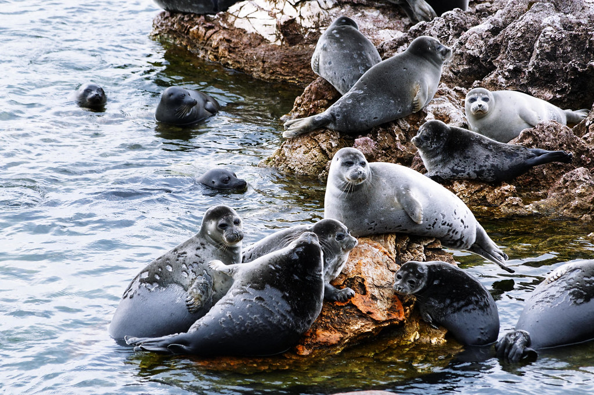

MARINE
ANIMALS
ANIMALS
Seals are four limbed, fin footed, carnivorous, marine mammals. While they live both on land and in the water and they do require air to breathe, they are generally better adapted for water which is where they spend most of their time. Seals can both see and hear better in water. Though many look quite slick, all seals have fur coats except for walruses.
Seals have 3 main families: earless seals (also known as true seals), eared seals, and walrus. Both earless seals and eared seals have several varieties of seals included in their family, but while the family including the walrus once included many variations, it now is solely composed of the walrus.
Earless seals have two main subfamilies, northern seals and southern seals. All members of this family share the name seal, unlike sea lions or walruses.
Baikal seals - A northern seal which holds the record for smallest seal at 1 meter long. They are also the only freshwater seal.
Harp seals - A northern seal well known for their cute, furry pups that appear in many photos.
Leopard seals - A southern seal considered to be the deadliest seal. Fortunately, attacks on humans are rare and there have even been a few friendly interactions between leopard seals and particularly lucky humans.
Elephant seals - There are two species of elephant seal, the northern and southern, which are both actually members of the southern seal subfamily. The southern elephant seal is the largest seal species, and can be up to 5.8 meters long.
Though sea lions and fur seals are seperated in name and some characteristics the two subgroups are both diverse enough within the group and similar enough between the two that a sea lion species may be closer related to a fur seal species than another sea lion species. For a long time these were the official subfamilies of eared seals, but currently there are no official subfamilies of eared seal, only genera. Of the two groups, sea lions are generally larger, and go on shorter foraging trips. The most notable difference though, is that fur seals have a thick underfur layer which sea lions lack.
California Sea Lions - California sea lions occupy most of the West coast of North America, including California. These sea lions have become fairly famous as they are highly intelligent and as a result can be trained, resulting in them being a common feature in marine wildlife shows.
Stellar Sea Lions - The largest eared seal and the sole member of its genus.
Northern Fur Seals - The northern fur seal is the sole living member of its genus and the largest of the fur seals. They are also the only fur seal which is not of the southern fur seal genus.
Hybrid seals - The classifications of eared seals can become particularly complex due to their genetic similarities. Sometimes hybrid seals are created, including cases of fertile hybrids. As species are defined by multiple means, this creates a minor contradiction to the very definition of species as a concept as for sexually reproducing animals the most common classification is of animals which can produce fertile offspring as one species, but these animals are geographically, and morphologically distinct enough that they would generally not be considered the same species.
The southern sea lion and south american fur seal pictured bellow are two distinct species which produced a fertile hybrid discovered in Uruguay.

Walrus -